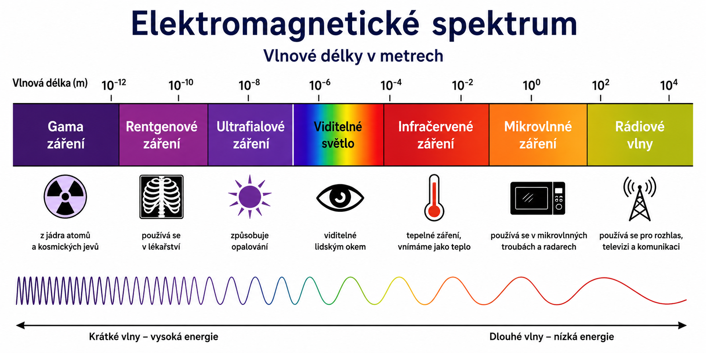
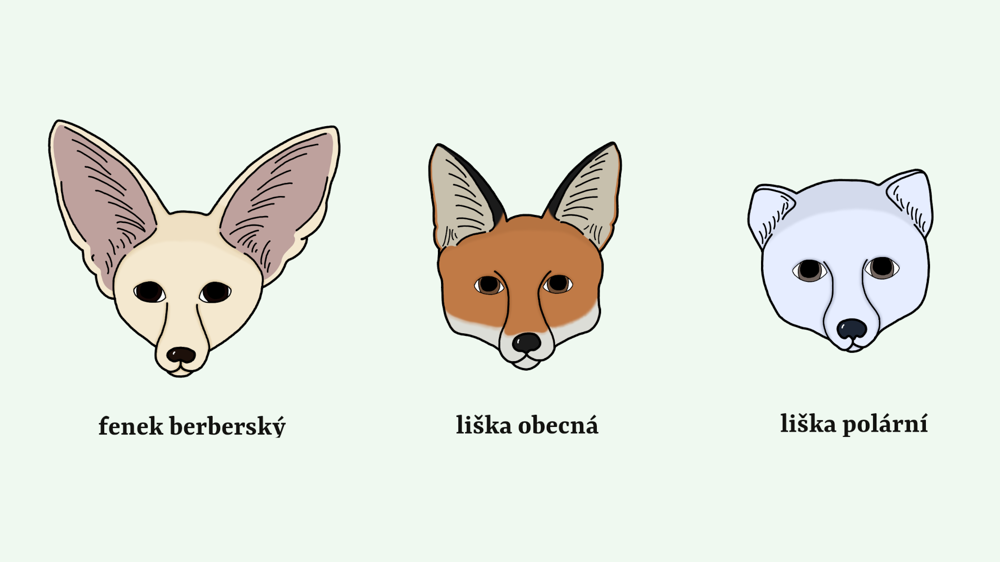
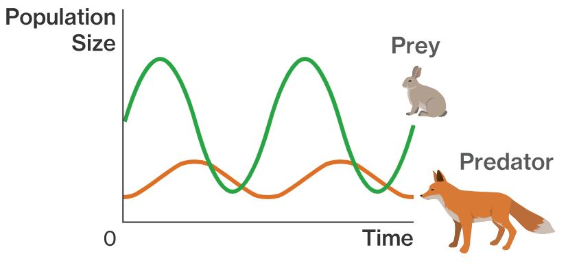

Ekologie se zabývá vztahy mezi organismy a jejich prostředím. Pod pojmem prostředí rozumíme jak složky abiotické, tak i složky biotické. Přesněji bychom ji mohli definovat jako vědu zkoumající interakce, které určují distribuci a početnost organismů; jinými slovy se zabývá tím, kde se organismy nacházejí, kolik jich tam je a proč tam jsou.
Pojem ekologie je v současnosti často využíván i mimo svůj původní vědecký kontext, zejména v marketingové komunikaci. Označení „ekologický výrobek“ je zde zpravidla používáno pro produkty deklarované jako šetrné k životnímu prostředí. S tímto fenoménem úzce souvisí tzv. greenwashing, tedy marketingová strategie, jejímž cílem je vytvořit u potenciálních zákazníků dojem environmentální odpovědnosti firmy, aniž by tomu plně odpovídala její skutečná praxe. K dosažení tohoto efektu jsou využívány například vizuální prvky (např. zelená barevnost či symbolika) nebo obecně formulovaná sdělení typu „šetrné k přírodě“, „eco-friendly“ či „zelená budoucnost“. Taková komunikace může vést k mylnému vnímání produktů ze strany spotřebitelů a k podpoře výrobků, které ve skutečnosti nemusí být k životnímu prostředí šetrné.
V souvislosti s nepřesným chápáním pojmu ekologie se objevují i mylné představy o práci ekologů. Ti bývají někdy spojováni s aktivistickými protesty, například s připoutáváním ke stromům, nebo s představou, že ekologové cíleně přesvědčují veřejnost ke změně životního stylu a k environmentálně šetrnějšímu chování. Tyto aktivity jsou však typické spíše pro environmentální aktivisty. Role ekologů spočívá především ve vědeckém výzkumu a ve vysvětlování veřejnosti dopadů lidské činnosti na životní prostředí.
Populace je soubor jedinců téhož druhu, které spolu žijí a rozmnožují se. Například může jít o populaci sedmikrásek na louce, vlků v lese nebo holubů ve městě. Každá populace obývá určitý biotop společně s dalšími druhy organismů. Soubor všech těchto populací pak vytváří biocenózu.
Vlastnosti populací
- Hustota populace: vyjadřuje počet jedinců určitého druhu na dané ploše nebo u vodních organismů v určitém objemu. Vyšší hustotu mají většinou menší organismy, zatímco velké druhy se v přírodě vyskytují spíše v menším počtu. Pro zachování rovnováhy v biocenóze je důležité, aby hustota populace zůstávala v určitých mezích. Při příliš nízké hustotě mohou mít jedinci problém najít partnera k rozmnožování. Naopak příliš vysoká hustota vede k přemnožení, které způsobuje nedostatek potravy, málo prostoru nebo zvýšený stres.
- Růst populace: velikost populace se může zvětšovat nebo zmenšovat. Ovlivňuje ji množivost, úmrtnost a migracestěhování jedinců.
- Rozmístění (rozptyl) populace: jedinci v populaci nebývají rozmístěni vždy stejně. Někdy je rozmístění rovnoměrné (stromy v některých lesích), jindy náhodné (rostliny na říčních náplavech). Nejčastěji se ale setkáváme se shloučeným rozmístěním (stáda savců).
- Struktura populace: označuje složení populace podle různých hledisek. Může se hodnotit například podle pohlaví, věku nebo sociální hierarchie jedincůvzájemné vztahy a postavení jedinců.
Společenstvo představuje souhrn populací všech organismů, které obývají určitý biotop. Tvoří tedy živou složku ekosystému. Jako příklad můžeme uvést společenstvo savců nebo společenstvo korun stromů.
Charakter společenstva určují dominantní populace (trávy na louce, stromy v lese, ryby v jezeře). Jejich význam je dán hlavně početností a také jejich postavením v potravních řetězcích.
Rozvrstvení v prostoru
Když pozorujeme například les, můžeme vidět rozdílné rozmístění organismů jak ve svislém směru (od půdy ke korunám stromů), tak i ve směru vodorovném (od okraje lesa směrem do jeho středu).
Svislé rozvrstvení vytváří jednotlivá patra:
- kořenové patro tvoří kořeny rostlin, bakterie, podhoubí i různí hmyzožravci,
- mechové patro zahrnuje přízemní rostliny a drobné živočichy,
- bylinné patro je tvořeno travinami a bylinami, žijí zde zástupci hmyzu či hlodavců,
- v keřovém patře nacházejí úkryt drobní ptáci a různé druhy hmyzu,
- ve stromovém patře (nejvyšším) žije hmyz, ptáci i savci (veverky, kuny...).
Také ve vodorovném směru se druhové zastoupení mění – jiné organismy najdeme na okraji lesa a jiné v jeho středu, podobně jako se liší břeh rybníka od jeho středu. Důležitou roli hrají přechodová pásma mezi biocenózami, protože zde vznikají specifické podmínky vhodné pro mnoho druhů organismů.
Rozvrstvení v čase
V průběhu roku lze ve většině biocenóz sledovat sezónní změny. Ty souvisejí hlavně se změnami teploty, vlhkosti a množství světla. V listnatých lesích například brzy na jaře rozkvétají sasanky a sněženky, zatímco později vykvétají keře a listnaté stromy.
Stabilita společenstva
Jen stabilní společenstvo dokáže odolávat změnám podmínek biotopu. Stabilita je výsledkem dlouhodobého vývoje, během kterého vznikly složité vztahy mezi jednotlivými organismy. Zachování stability závisí hlavně na druhové rozmanitosti (například tropický prales oproti poušti) a na zachování vhodných podmínek biotopu. Náhlé změny prostředí, jako výbuch sopky nebo rozsáhlý požár, mohou stabilitu společenstva výrazně narušit.
Prostředí je soubor všech činitelů a podmínek působících na živý systém jak z vnějšího okolí, tak i uvnitř systému. Formuje pro organismy životní podmínky (faktory). Podle toho, zda jde o působení živých či neživých činitelů, mluvíme o faktorech abiotických a biotických.
Abiotické faktory
Abiotické faktoryfaktory neživé přírody prostředí, tedy světlo, teplo, voda, vzduch a minerálních složek, působí na organismy a organismy působí i na ně (rostlinné porosty působí na klima, svými kořeny narušují horninový podklad a podílejí se na vývoji půd apod.).
Sluneční záření
Hlavním zdrojem energie pro život na Zemi je Slunce. Jeho záření má různé vlnové délky, podle kterých ho rozdělujeme na různá spektrální pásma.

- Značnou část ultrafialového záření zachytí atmosféra. Má většinou negativní účinky (především UVB, UVC), zpomaluje růst rostlin (pozorovatelné u rostlin na horách), působí změny v DNA. Na druhou stranu se díky němu vytváří vitamín D v kůži člověka.
-
Viditelné světlo má vliv na fotoperiodismusvzájemný vztah mezi světlem
a životními procesy.- Rostliny zachycují světlo pomocí svých barviv a délka denního svitu ovlivňuje nástup kvetení. Některé rostliny vyžadují více světla, jiné méně. Světlo je pro rostliny základním zdrojem energie využívaným při fotosyntéze.
- Živočichové vnímají světlo svými zrakovými orgány. Světlo jim nejen umožňuje orientaci a dorozumívání, ale také ovlivňuje jejich barevnost: u živočichů žijících ve tmě (jeskyně, půda, hluboké vody) pozorujeme úbytek pigmentu či redukci nebo ztrátu zrakových orgánů. Ovlivňuje aktivitu živočichů (denní nebo noční živočichové) a podobně jako u rostlin, fotoperiodadélka denního osvětlení působí na některé životní projevy, např. na nástup rozmnožování, stěhování nebo výměnu srsti a peří.
-
Infračervené záření je jedním ze zdrojů tepla pro organismy. Pro život organismů existuje určitá teplota, tzv. teplotní optimum, při které se jim daří nejlépe. U většiny rostlin a živočichů spadá do rozmezí 15–30 °C. Existují
však výjimky s extrémní tepelnou odolností. Některé bakterie snesou teploty od -190 do +100 °C a jejich spory až -271 °C.

- Rostliny mohou regulovat svoji teplotu pomocí transpiraceodpařování vody z listů a disponují ochrannými mechanismy proti přehřátí a vysychání, například silně ochlupenými listy, lesklými listy odrážejícími záření nebo zmenšenou transpirační plochou (kaktusy). Naopak druhy žijící v chladných podmínkách často rostou výrazně zakrslé.
- U živočichů se tepelná bilancerovnováha mezi přijímaným
a odevzdávaným teplem
organismu nebo prostředí a odolnost značně liší u živočichů exotermních a endotermních. První jmenovaní produkují jen málo tepla a nedokáží zabraňovat jeho ztrátám. Jejich tělesná teplota je závislá na teplotě okolí. Teplota u těchto živočichů ovlivňuje řadu životních projevů, jako aktivitu, rozmnožování, zbarvení (nižší teploty podporují vznik tmavých forem – motýli). Endotermní živočichové mají velkou produkci tepla díky intenzivnímu metabolismu a dobrou izolaci, a proto jsou schopni udržet stálou vnitřní teplotu. U endotermních ovlivňuje teplota některé životní projevy: zbarvení (nízké teploty zde naopak podporují vznik světlejších forem – liška polární), změny v chování živočichů (koupání zvířat, vyhledávání úkrytů, možnost stěhování), rozmnožování. Někteří při nízkých teplotách upadají do hibernacezimní spánek,
životní funkce na minimu či estivaceletní spánek,
ochrana před
teplem a suchem. Vztah živočichů k teplu vysvětluje několik pravidel (neplatí však úplně obecně), jako je pravidlo Allenovo, podle něhož mají živočichové v chladnějších oblastech kratší uši, ocasy, zobáky aj. než v oblastech teplejších (viz obrázek).
Vzduch
V troposféře je vzduch, jehož vlastnosti ovlivňují živočichy i rostliny.
- Tlak vzduchu je proměnlivý. Obecně se stoupající nadmořskou výškou tlak vzduchu klesá a tím klesá i množství kyslíku ve vzduchu. Proto se někteří živočichové adoptovali na život ve vysokých nadmořských výškách.
- Malá hustota vzduchu je příčinou jeho malé nosnosti. Létající živočichové proto mají menší rozměry a hmotnost než pozemní či vodní.
- Vítr umožňuje přenos pylu, semen, plodů, může ale také ničit porosty, ochlazovat a vysušovat organismy.
Mezi další vlastnosti vzduchu patří obsah kyslíku v něm a obsah oxidu uhličitého.
Voda
- Tlak vody s přibývající hloubkou se zvyšuje. Vodní živočichové žijící ve velkých hloubkách se velkému tlaku museli adaptovat. V hlubinách v oblastech podmořské sopečné činnosti se vyskytuje poměrně rozmanitý život.
- Důsledkem vysoké hustoty vody (775krát vyšší než u vzduchu) je její velká nosnost, která umožnila organismům vyvinout se do značných tělesných rozměrů. Zároveň vysoká hustota vody omezuje pohyblivost organismů. Aktivně plovoucí živočichové se tomuto prostředí adaptovali vývojem hydrodynamického tvaru těla.
- Propustnost světla: U rostlin žijících ve velkých hloubkách, kam pronikne jen malé množství světla, jsou přítomny kromě chlorofylu i další barviva pohlcující zejména modrou, fialovou a zelenou složkou spektra, tedy ty vlnové délky, které vodou pronikají nejlépe. Množství světla v různých hloubkách také ovlivňuje zrakovou orientaci živočichů. U hlubinných živočichů proto bývají někdy redukovány. Často se vyvíjejí světélkující orgány, které umožňují orientaci a lákání kořisti.
Půda
Půda je zdrojem většiny anorganických živin rostliny a životním prostředím edafonů. Vlastnosti půdy ovlivňující organismy jsou pórovitostdrobné otvory v půdě, teplota, chemické složení půdy aj.
Biotické faktory
Symbióza je v širším slova smyslu úzké soužití dvou a více organismů a může se jednat o soužití výhodné, nevýhodné či neutrální. Vztahy mezi populacemi zahrnují například:
- Mutualismus: typ symbiózy, které je nezbytné pro oba druhy (např. mořská sasanka žijící na ulitě poustevníčka)
- Komenzalismus: soužití nezbytné pro jeden druh, zatímco druhý z něj nemá ani prospěch, ani újmu (hyeny využívají zbytky kořisti ulovené lvy)
- Konkurence: vzájemné soutěžení mezi populacemi o potravu, prostor, přístup k vodě atd. (káně a poštolka soupeří o stejný zdroj potravy: drobné hlodavce)
- Amenzalismus: jedna populace vytváří chemické látky, kterými potlačuje růst druhé populace (trnovník akát vylučuje do půdy látky zabraňující růstu jiných rostlin)
- Predace: vztah dravce (predátora) a kořisti, přičemž predátor bývá méně početný a obvykle i větší než kořist (lvi loví zebry a antilopy)
- Parazitismus: vztah parazita a hostitele, kdy parazit získává živiny na úkor hostitele a bývá zpravidla početnější a menší než hostitel (např. blechy na kůži savců nebo tasemnice ve střevě hostitele)

Také se vyskytují vnitrodruhové vztahy, jako jsou konkurence o potravu a prostor, spolupráce ve stádu či péče o mláďata.
Zavlečení nepůvodního druhu do prostředí, kde se přirozeně nevyskytuje a kde nemá své přirozené predátory, může mít nepříznivý dopad na ekosystém. Takový druh se může rychle přemnožit a rovnováhu ekosystému narušit. Příkladem jsou králíci, kteří se po zavlečení do Austrálie výrazně přemnožili a způsobili rozsáhlé ekologické škody.
Vztahy mezi organismy bývají často velmi složité a změna jedné populace může ovlivnit řadu dalších druhů. Ekologové například zjistili, že množství žaludů má vliv na početnost myší a jelenů. Vyšší množství potravy umožňuje růst jejich populací, což následně vytváří vhodnější podmínky i pro klíšťata, která na těchto živočiších parazitují. Tento jev se nepřímo projevuje také u lidí. Přibližně dva roky po mimořádně bohaté úrodě žaludů bývá zaznamenán vyšší počet případů lymské boreliózy. Původcem tohoto onemocnění jsou bakterie přenášené klíšťaty, jejichž běžnými hostiteli jsou právě myši a jeleni, klíšťata však mohou napadat i člověka. V letech následujících po bohaté úrodě žaludů bývá počet larev klíšťat až osmkrát vyšší než po letech s nízkou úrodou.
- ŠLÉGL, Jiří; KISLINGER, František a LANÍKOVÁ, Jana. Ekologie a ochrana životního prostředí pro gymnázia. Praha: Fortuna, 2002. ISBN 80-7168-828-2.
- TOWNSEND, Colin R.; BEGON, Michael a HARPER, John L. Základy ekologie. Olomouc: Univerzita Palackého v Olomouci, 2010. ISBN 978-80-244-2478-1.
- JAKRLOVÁ, Jana a PELIKÁN, Jaroslav. Ekologický slovník terminologický a výkladový. Praha: Fortuna, 1999. ISBN 80-716-8644-1.
- Co je to ekologie? Online. PCC. 2022. Dostupné z: https://www.products.pcc.eu/cs/blog/co-je-to-ekologie-vse-co-potrebujete-vedet/. [cit. 2026-06-24].
- Greenwashing – Proč není úplně správný a jak zní nová novela zákona? Online. Jihosepar a.s. 2023. Dostupné z: https://jihosepar.cz/greenwashing-proc-neni-uplne-spravny-a-jak-zni-nova-novela-zakona/. [cit. 2026-06-24].